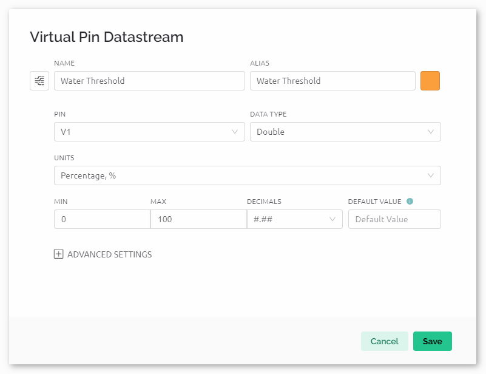

注釈
こんにちは、SunFounderのRaspberry Pi & Arduino & ESP32愛好家コミュニティへようこそ！Facebook上でRaspberry Pi、Arduino、ESP32についてもっと深く掘り下げ、他の愛好家と交流しましょう。
参加する理由は？
エキスパートサポート：コミュニティやチームの助けを借りて、販売後の問題や技術的な課題を解決します。
学び＆共有：ヒントやチュートリアルを交換してスキルを向上させましょう。
独占的なプレビュー：新製品の発表や先行プレビューに早期アクセスしましょう。
特別割引：最新製品の独占割引をお楽しみください。
祭りのプロモーションとギフト：ギフトや祝日のプロモーションに参加しましょう。
👉 私たちと一緒に探索し、創造する準備はできていますか？[ここ]をクリックして今すぐ参加しましょう！
Blynkを使った自動散水システム
このプロジェクトは、土壌湿度センサーと水ポンプを活用した自動散水システムを示すことを目的としています。Blynkアプリはユーザーとのインタラクションに使用され、土壌の湿度データを受信し、散水閾値と自動モードのステータスをシステムに送信します。自動モードで土壌の湿度が閾値を下回ると、システムは水ポンプを起動します。
1. 配線を組み立てる
注釈
ESP8266モジュールは安定した動作環境を提供するために高電流が必要なため、9Vのバッテリーが接続されていることを確認してください。

2. Blynkを設定する
注釈
Blynkに慣れていない場合、最初にこれらの2つのチュートリアルを読むことを強くお勧めします。 Blynkで始める方法 はBlynkの初心者向けガイドで、ESP8266の設定方法とBlynkへの登録方法が含まれています。また、 Blynkを使用した炎警報システム は簡単な例ですが、手順の説明がより詳細です。
2.1 テンプレートの作成
まず、Blynk上で 「Auto watering system」 というテンプレートを作成する必要があります。
2.2 データストリーム
esp8266およびuno r4ボードからのデータを受け取るために、 Datastream ページで Virtual Pin タイプの Datastream を 作成します。
以下の図に従って仮想ピンV0を作成：
Virtual Pin V0 の名前を 「Moisture Percentage」 に設定します。 DATA TYPE を Double に設定し、最小値と最大値を 0 と 100 に設定します。 UNITS は 「Percentage,%」 に設定します。

以下の図に従って仮想ピンV1を作成：
Virtual Pin V1 の名前を 「Water Threshold」 に設定します。 DATA TYPE を Double に設定し、最小値と最大値を 0 と 100 に設定します。 UNITS は 「Percentage,%」 に設定します。

以下の図に従って仮想ピンV2を作成：
Virtual Pin V2 の名前を 「Auto Mode」 に設定します。 DATA TYPE を Integer に設定し、最小値と最大値を 0 と 1 に設定します。


2.3 Webダッシュボード
自動散水システムと対話するために Web Dashboard も設定する必要があります。
以下の図に従ってWebダッシュボードを設定します。ラベル、ゲージ、スイッチ、スライダー、チャートなどのウィジェットを使用しています。各ウィジェットを対応する仮想ピンにバインドしてください。

3. コードの実行
ultimate-sensor-kit\iot_project\wifi\07-Auto_watering_systemのパス内にある07-Auto_watering_system.inoファイルを開く、またはこのコードを Arduino IDE にコピーアンドペーストします。「Auto watering system」のテンプレートを使用してBlynkデバイスを作成します。次に、
BLYNK_TEMPLATE_ID、BLYNK_TEMPLATE_NAME、BLYNK_AUTH_TOKENを自分のものに置き換えます。#define BLYNK_TEMPLATE_ID "TMPxxxxxxx" #define BLYNK_TEMPLATE_NAME "Auto watering system" #define BLYNK_AUTH_TOKEN "xxxxxxxxxxxxx"
使用しているWiFiの
ssidとpasswordも入力する必要があります。char ssid[] = "your_ssid"; char pass[] = "your_password";
正しいボードとポートを選択した後、 書き込み ボタンをクリックします。
シリアルモニター（ボーレートを115200に設定）を開き、成功した接続などのプロンプトが表示されるまで待ちます。

注釈
接続時に「ESP is not responding（ESPが応答していません）」というメッセージが表示された場合、以下の手順に従ってください。
9Vバッテリーが接続されていることを確認してください。
RSTピンを1秒間GNDに接続して、ESP8266モジュールをリセットします。その後、ピンを抜きます。
R4ボード上のリセットボタンを押します。
これらの操作は3～5回繰り返す必要がある場合もありますので、ご注意ください。
4. コードの解説
Blynkクラウドの設定とライブラリのインポート
以下の行は、ArduinoデバイスをBlynkクラウドに識別・認証するための固有のIDとトークンを定義しています。さらに、ESP8266 WiFiモジュール、Blynkの機能、ソフトウェアシリアル通信を使用するための基本的なライブラリがインポートされています。
#define BLYNK_TEMPLATE_ID "TMPLxxxxxx" #define BLYNK_TEMPLATE_NAME "Auto watering system" #define BLYNK_AUTH_TOKEN "xxxxxxxxxxxxxxx" #define BLYNK_PRINT Serial #include <ESP8266_Lib.h> #include <BlynkSimpleShieldEsp8266.h> #include <SoftwareSerial.h>
WiFiとハードウェアの設定
ここではWiFiの認証情報(
ssidおよびpass)を定義しています。また、ArduinoとESP8266間のソフトウェアシリアル通信のためのピン2(RX)と3(TX)を設定しています。この通信のボーレートは115200として定義されています。char ssid[] = "your_ssid"; char pass[] = "your_password"; SoftwareSerial EspSerial(2, 3); #define ESP8266_BAUD 115200 ESP8266 wifi(&EspSerial);
ピンとグローバル変数の定義
水ポンプの制御と土壌湿度センサのピンが定義され、センサの値、しきい値、モードなどを格納するためのグローバル変数も定義されています。
実際の状況に応じて、自分の
moistureInAirとmoistureInWaterを測定する必要があります。計算されたmoisturePercentageが0-100%の範囲を超えないように、センサの変動を考慮してmoistureInAirの読取りを上方に調整します。逆に、これらの変動を補償するために、記録時にmoistureInWaterの読取りを下方に調整します。// Define pin configurations for the water pump const int pump1A = 9; const int pump1B = 10; bool pumpStatus = 0; // 0 indicates OFF, 1 indicates ON // Define the soil moisture sensor const float moistureInAir = 535; // Measure by placing the sensor in air const float moistureInWater = 280; // Measure by immersing the sensor in water const int sensorPin = A0; int sensorValue = 0; // Stores the raw sensor value int autoMode = 0; int waterThreshold = 0; // The soil moisture percentage threshold to activate watering float moisturePercentage = 0; // The calculated soil moisture percentage
setup()関数内の初期設定
2つのタイマーを設定します：
timer.setInterval(10000L, updateDataTimer)を使用してタイマー間隔を設定し、ここではupdateDataTimer()関数を 10000ms ごとに実行するように設定します。updateDataTimer()実行の間隔を変更するには、最初のパラメータを変更します。timer.setInterval(35000L, autoWaterTimer)を使用してタイマー間隔を設定し、ここではautoWaterTimer()関数を 35000ms ごとに実行するように設定します。autoWaterTimer()実行の間隔を変更するには、最初のパラメータを変更します。
void setup() { pinMode(pump1A, OUTPUT); // set pump1A as output pinMode(pump1B, OUTPUT); // set pump1B as output digitalWrite(pump1B, LOW); // Keep pump1B low Serial.begin(115200); // Start serial communication at 115200 baud rate for debugging EspSerial.begin(ESP8266_BAUD); // Set ESP8266 baud rate delay(10); // Configure Blynk and connect to WiFi Blynk.config(wifi, BLYNK_AUTH_TOKEN); Blynk.connectWiFi(ssid, pass); // Configure timer events timer.setInterval(10000L, updateDataTimer); // Update sensor data every 10 seconds timer.setInterval(35000L, autoWaterTimer); // Check watering conditions every 35 seconds }
loop()関数
この関数は常に呼び出されるので、通常はこの関数内で時間のかかる処理を避けるようにしています。この関数では、
Blynk.run()関数とtimer.run()関数を実行しています。void loop() { Blynk.run(); timer.run(); }
Blynkアプリとの対話
以下の関数は、Blynkアプリで特定の操作が行われたときにトリガーされます。
BLYNK_CONNECTED(): デバイスがBlynkに接続したときに呼び出されます。仮想ピンの初期状態を同期します。BLYNK_WRITE(V1): 仮想ピン1（水分量の閾値）が変更されたときにトリガーされます。BLYNK_WRITE(V2): 仮想ピン2（自動モードの状態）が変更されたときにトリガーされます。
// This function is called every time the device is connected to the Blynk.Cloud BLYNK_CONNECTED() { Blynk.syncVirtual(V1); // Sync water threshold Blynk.syncVirtual(V2); // Sync auto mode status } // This function is called every time the Virtual Pin 1 state changes BLYNK_WRITE(V1) { waterThreshold = param.asInt(); // Update watering threshold Serial.print("Received threshold. waterThreshold:"); Serial.println(waterThreshold); } // This function is called every time the Virtual Pin 2 state changes BLYNK_WRITE(V2) { autoMode = param.asInt(); // Update auto mode status if (autoMode == 1) { Serial.println("The switch on Blynk has been turned on."); } else { Serial.println("The switch on Blynk has been turned off."); } }
タイマーのコールバックと自動水やりロジック
これらの関数は、タイマーが実行するタスクを処理します：
updateDataTimer():sendData()を呼び出して、現在の土壌湿度データをBlynkに送信します。autoWaterTimer():autoWater()を呼び出して、水やりが必要かどうかをチェックします。sendData(): 土壌の湿度のパーセンテージを計算し、それをBlynkアプリに送信します。autoWater(): 設定された閾値と自動モードがオンかどうかに基づいて、土壌に水が必要かどうかを確認します。
void updateDataTimer() { sendData(); } void autoWaterTimer() { autoWater(); } // Function to send sensor data to Blynk app void sendData() { // Calculate soil moisture percentage sensorValue = analogRead(sensorPin); moisturePercentage = 1 - (sensorValue - moistureInWater) / (moistureInAir - moistureInWater); Serial.println("-----------------------------"); Serial.println("Update soil moisture data ..."); Serial.print("sensorValue:"); Serial.print(sensorValue); Serial.print(" moisturePercentage:"); Serial.println(moisturePercentage * 100); // Send moisture percentage to Blynk app Blynk.virtualWrite(V0, moisturePercentage * 100); } // Function to control automatic watering based on soil moisture and user settings void autoWater() { if (autoMode == 1 && moisturePercentage * 100 < waterThreshold) { if (!pumpStatus) { turnOnPump(); Serial.println("-----------------------------"); Serial.println("Watering..."); // Turn off pump after 2 seconds timer.setTimeout(2000L, turnOffPump); } } }
ポンプ制御関数
これらの関数は、水ポンプの操作を直接制御します：
turnOnPump(): ポンプを作動させます。turnOffPump(): ポンプを停止させます。
void turnOnPump() { digitalWrite(pump1A, HIGH); pumpStatus = 1; } void turnOffPump() { digitalWrite(pump1A, LOW); pumpStatus = 0; }
参考資料